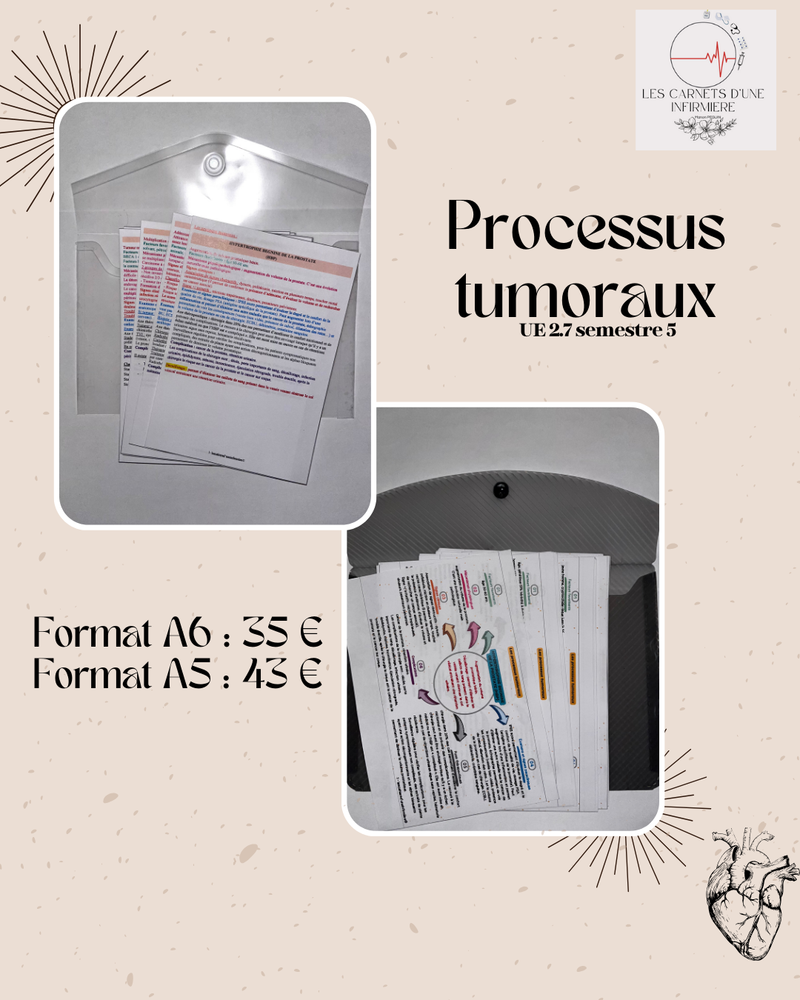
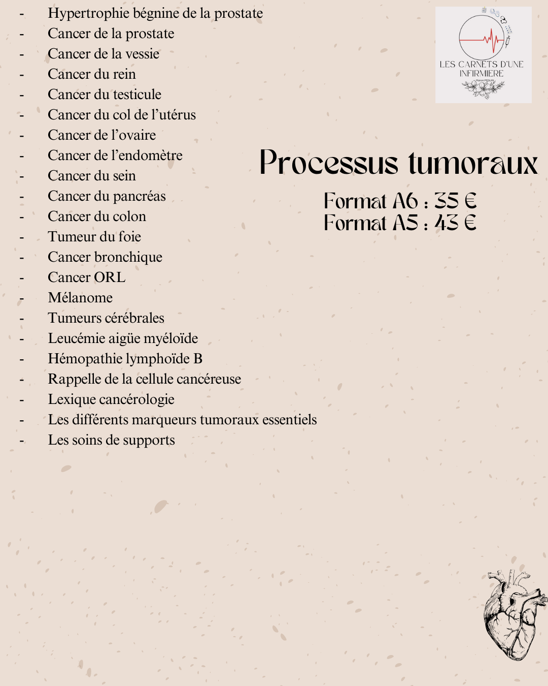

Processus tumoraux (UE 2.9 semestre 5)
Description :
Ce pack correspond à l’unité d’enseignement 2.9. Il permet d’étudier les cancers sur une trame
(définition, facteurs favorisants, signes cliniques, examens complémentaires, axes thérapeutiques
et complication). Vous pourrez ainsi vous en servir pour étudier lors de votre formation puis plus
tard lorsque vous serez confronter aux cancers de certains patients.
Ce pack regroupe :
- Hypertrophie bénigne de la prostate
- Cancer de la prostate
- Cancer de la vessie
- Cancer du rein
- Cancer du testicule
- Cancer du col de l’utérus
- Cancer de l’ovaire
- Cancer de l’endomètre
- Cancer du sein
- Cancer du pancréas
- Cancer du colon
- Tumeur du foie
- Cancer bronchique
- Cancer ORL
- Mélanome
- Tumeurs cérébrales
- Leucémie aiguë myéloïde
- Hémopathie lymphoïde B
- Rappel de la cellule cancéreuse
- Lexique cancérologie
- Les différents marqueurs tumoraux essentiels
- Les soins de support
Prix :
- A6 : 35 €
- A5 : 43 €
- Plastifié : +10%